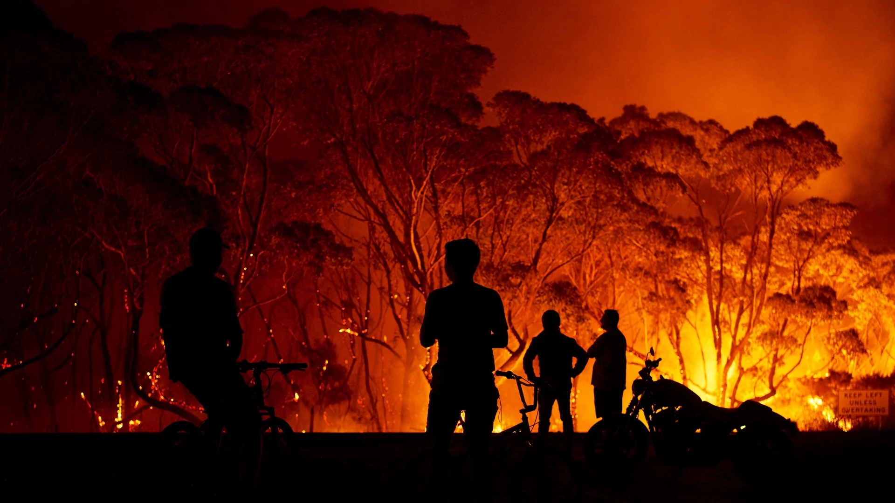
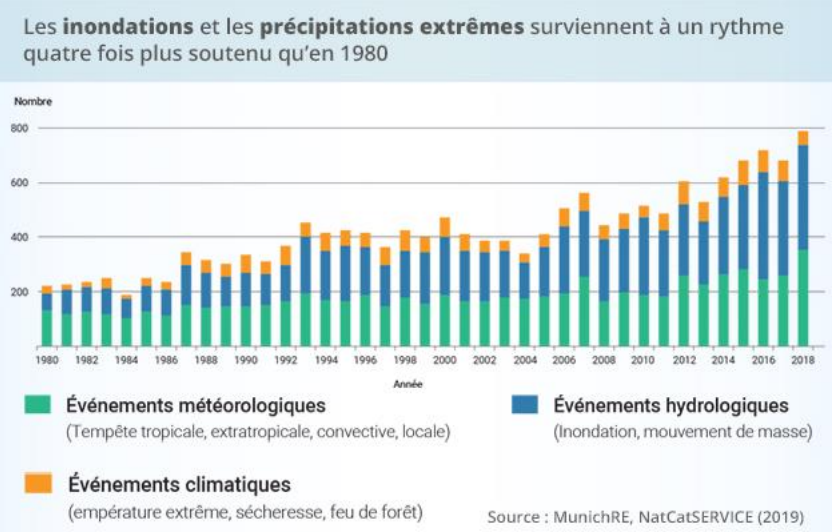
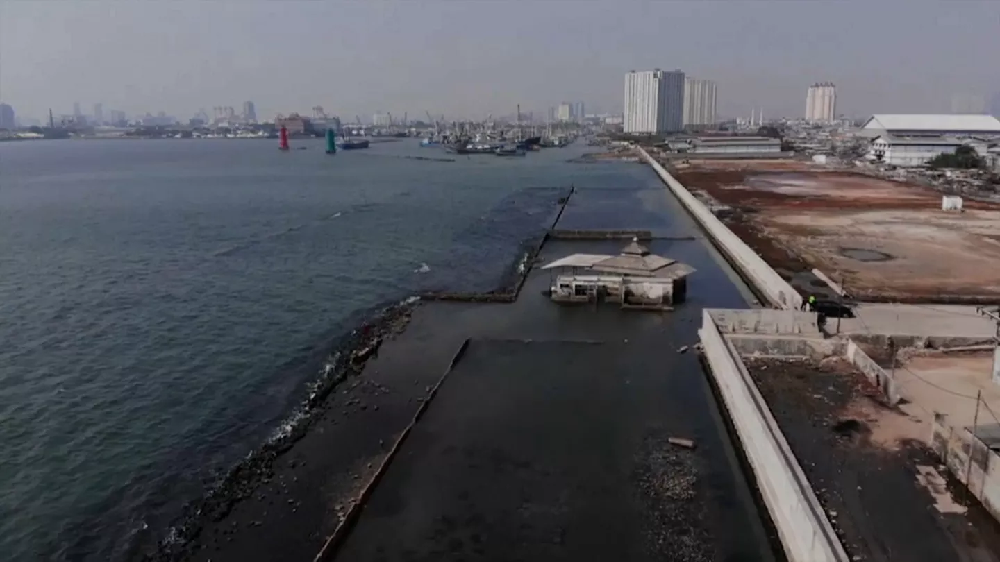
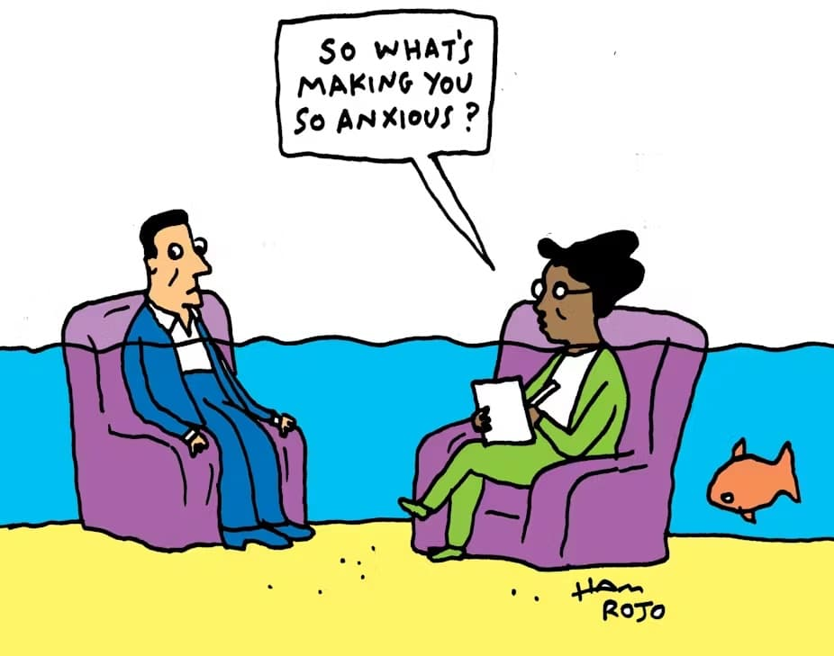

Bienvenue sur LaTerracho
Qu'est-ce que c'est ?
LaTerracho présente diverses causes et conséquences du réchauffement climatique de la Terre.
Ce projet est né dans le cadre des cours d'enseignement scientifique SVT de madame Dubillet. C'est le résultat d'une collaboration entre tous les élèves de la TG6.
Nous vous proposons des articles écrits, organisés et publiés par des équipes de rédactions de notre classe qui se sont longuement renseignées sur les différentes facettes du réchauffement climatique et le rôle de l'Homme au sein de ce dernier.
Avec chaque article, vous pourrez retrouver des vidéos ludiques ou informatives crées par des membres de notre classe.
Nous avons pour but de vous faire prendre conscience des enjeux climatiques et des conséquences de tels changements dans votre vie du quotidien.
Pourquoi un site Internet et pas un journal ?
Nous pensons qu'un site Internet est bien plus accessible au plus grand nombre qu'une distribution de journaux. De plus, cela évite d'en imprimer un trop grand nombre, qui finiraient indéniablement par se retrouver dans une poubelle. Cela permet d'éviter de participer à la déforestation.
Cependant, cette solution n'est pas non plus parfaite, et l'hébergement de ce site sur Internet participe aux émissions de gaz à effet de serre. Pour palier à cela, nous vous invitions à utiliser Ecosia dans votre quotidien. C'est un moteur de recherche qui utilise ses profits pour planter des arbres et investir dans des infrastructures/projets écologiques.
Bonne lecture !
La déforestation est le phénomène de régression durable des surfaces couvertes de forêts.
Les causes de la déforestation :
Le déboisement et le défrichement sont les principaux facteurs de la disparition des forêts. Ces pratiques sont principalement motivées par l'extension des terres agricoles, l'exploitation minière, la construction d'infrastructures (barrages, routes), l'urbanisation croissante, ainsi que l'exploitation parfois excessive de certaines essences forestières. Contrairement aux idées reçues, les entreprises forestières légales ne figurent pas parmi les principaux responsables du phénomène.

Une accélération sans précédent :
Bien que la déforestation ne soit pas un phénomène récent — des traces en existent déjà depuis le Néolithique — son intensité a considérablement augmenté ces dernières décennies. Entre 2000 et 2010, plus de 100 millions de mètres cubes de bois ont été illégalement abattus chaque année, soit l'équivalent de dix fois le tour de la planète si l'on alignait les troncs coupés.

Une exploitation massive aux conséquences dramatiques :
Sur le plan économique : les pays en développement subissent les déforestations illégales et ont perdu au total environ 10 milliards d'euros pour 5 millions d'hectares détruits chaque année.
Concernant le climat : selon l'ONU et la FAO, la déforestation est responsable de 4,3 à 5,5 gigatonnes d'émissions de CO₂ par an, soit entre 9 et 11 % des émissions d'origine humaine.
Au cours du XXe siècle, la moitié des forêts de la planète ont été détruites.
La déforestation a aussi des impacts sur la biodiversité. Notamment la disparition d'espèces protégées et indispensable à l'écosystème tel que la Loutre d'Europe qui est en voie de disparition. Or cette dernière est indispensable à l'équilibre des lacs et des marais, eux même indispensable à l'écosystème forestier.
Des solutions possibles :
A notre échelle, nous pouvons utiliser le moteur de recherche Ecosia, qui s'engage contre la déforestation.
Sinon vous pouvez vous engager vous-même en allant travailler à l'ONF (l'office national des forêt). Il est également possible de participer politiquement et renverser les pouvoirs déforesteurs comme l'a fait l'activiste Greta Thunberg à seulement 16 ans.
Une mesure plus simple est de limiter votre consommation de papier, de carton mais surtout de viande (le soja est beacoup utilisé pour nourrir le bétail, or la création de champs de soja est la principale cause de déforestation mondiale) et d'huile de palme.

Anthropocène : Le Souffle Humain qui détraque le monde
Depuis le début du XXIe siècle, un concept nouveau émerge dans les milieux scientifiques et environnementaux : celui de l'Anthropocène.
Du grec « anthropos » qui signifie « être humain » et kainos qui se traduit par « nouveau », ce terme désigne une ère géologique inédite, caractérisée par l'impact massif et irréversible des activités humaines sur la planète.
Contrairement aux ères géologiques précédentes, définies par des phénomènes naturels majeurs (comme les glaciations ou les éruptions volcaniques), l'Anthropocène met en lumière le rôle central de l'homme dans la transformation de la biosphère et des grands équilibres terrestres.
Cette notion fait aujourd'hui l'objet de nombreux débats : est-il légitime de considérer l'action humaine comme une force géologique à part entière ?
À partir de quand cette ère aurait-elle commencé ?
Et quelles en sont les conséquences pour notre avenir ?
Autant de questions cruciales qui invitent à une réflexion profonde sur la place de l'humanité dans l'histoire de la Terre, et sur les responsabilités qui en découlent.
Qu'est-ce que l'Anthropocène ?
 Le concept d'Anthropocène, popularisé par le météorologue Paul Crutzen en 2000, désigne une nouvelle époque géologique marquée par l'impact déterminant de l'espèce humaine sur la Terre.
Pour la première fois dans l'Histoire, l'Homme est devenu une force géophysique capable de modifier durablement les équilibres climatiques, géologiques, biologiques et atmosphériques de la planète, au point de justifier l'ouverture d'une nouvelle époque.
Le concept d'Anthropocène, popularisé par le météorologue Paul Crutzen en 2000, désigne une nouvelle époque géologique marquée par l'impact déterminant de l'espèce humaine sur la Terre.
Pour la première fois dans l'Histoire, l'Homme est devenu une force géophysique capable de modifier durablement les équilibres climatiques, géologiques, biologiques et atmosphériques de la planète, au point de justifier l'ouverture d'une nouvelle époque.
Cette ère présente de nombreux signes visibles et préoccupants.
D'abord, nous en entendons parler de plus en plus ces dernières années : le réchauffement climatique.
Depuis la fin du XIXe siècle, la température moyenne à la surface de la Terre a augmenté d'environ 1,2°C.
Cette élévation est principalement due à l'augmentation des gaz à effet de serre issus de la combustion des énergies fossiles (charbon, pétrole, gaz naturel).
Elle engendre des conséquences en cascade sur les équilibres climatiques mondiaux.
 Ensuite, nous remarquons la montée du niveau des mers.
Les océans ont gagné en moyenne 20 centimètres depuis 1900, à cause de la fonte des glaciers et de la dilatation thermique des eaux.
Ce phénomène s'accélère, atteignant aujourd'hui un rythme de plus de 3 millimètres par an, ce qui menace les zones côtières densément peuplées.
Un autre enjeu majeur de notre époque : la pollution généralisée.
En effet, l'environnement terrestre, marin et atmosphérique est massivement affecté.
Chaque année, plus de 8 millions de tonnes de plastique finissent dans les océans.
On en vient à parler d'un septième continent aussi appelé « gyre du Pacifique Nord » qui désigne une large surface de plastiques flottants qui ferait 3 à 6 fois la taille de la France.
La pollution de l'air cause environ 7 millions de morts prématurées par an, selon l'OMS.
Les sols agricoles, quant à eux, sont saturés de pesticides et d'engrais chimiques, affectant la santé humaine et les équilibres écosystémiques.
La déforestation est également un signe de cette nouvelle ère, des millions d'hectares de forêts tropicales disparaissent chaque année, en Amazonie, en Afrique centrale et en Asie du Sud-Est.
Ensuite, nous remarquons la montée du niveau des mers.
Les océans ont gagné en moyenne 20 centimètres depuis 1900, à cause de la fonte des glaciers et de la dilatation thermique des eaux.
Ce phénomène s'accélère, atteignant aujourd'hui un rythme de plus de 3 millimètres par an, ce qui menace les zones côtières densément peuplées.
Un autre enjeu majeur de notre époque : la pollution généralisée.
En effet, l'environnement terrestre, marin et atmosphérique est massivement affecté.
Chaque année, plus de 8 millions de tonnes de plastique finissent dans les océans.
On en vient à parler d'un septième continent aussi appelé « gyre du Pacifique Nord » qui désigne une large surface de plastiques flottants qui ferait 3 à 6 fois la taille de la France.
La pollution de l'air cause environ 7 millions de morts prématurées par an, selon l'OMS.
Les sols agricoles, quant à eux, sont saturés de pesticides et d'engrais chimiques, affectant la santé humaine et les équilibres écosystémiques.
La déforestation est également un signe de cette nouvelle ère, des millions d'hectares de forêts tropicales disparaissent chaque année, en Amazonie, en Afrique centrale et en Asie du Sud-Est.
 Cette perte des forêts, poumons de la planète, affaiblit la capacité de la Terre à absorber le dioxyde de carbone (CO2) et provoque une destruction massive d'habitats naturels.
Enfin, nous constatons l'extinction massive de certaines espèces.
Le taux actuel d'extinction est 100 à 1 000 fois supérieur au rythme naturel.
Cette sixième extinction de masse est provoquée par la perte d'habitats, la surexploitation des ressources, le changement climatique, la pollution et les espèces invasives telles que la moule zébrée ou la tortue de Floride.
Cette perte des forêts, poumons de la planète, affaiblit la capacité de la Terre à absorber le dioxyde de carbone (CO2) et provoque une destruction massive d'habitats naturels.
Enfin, nous constatons l'extinction massive de certaines espèces.
Le taux actuel d'extinction est 100 à 1 000 fois supérieur au rythme naturel.
Cette sixième extinction de masse est provoquée par la perte d'habitats, la surexploitation des ressources, le changement climatique, la pollution et les espèces invasives telles que la moule zébrée ou la tortue de Floride.
Les effets de l'Homme sur la planète :
 L'action humaine transforme profondément les grands équilibres naturels.
Cet impact, désormais mesurable à l'échelle planétaire, prend plusieurs formes interdépendantes.
En premier lieu, les changements climatiques : la hausse des températures provoque la fonte des glaciers et des calottes polaires, modifie les régimes de précipitations et amplifie les catastrophes naturelles (sécheresses, incendies, inondations).
Depuis les années 1980, la fréquence des vagues de chaleur extrême a doublé.
Certaines régions d'Afrique, du Moyen-Orient ou d'Asie du Sud pourraient devenir inhabitables à
moyen terme.
La pollution et destruction des écosystèmes résultent également de l'activité humaine terrestre.
Puisqu'en effet, les infrastructures humaines (routes, barrages, zones urbaines) fragmentent les milieux naturels.
Cette fragmentation isole les populations animales, réduit leur diversité génétique et compromet leur survie à long terme.
Les corridors écologiques sont rompus, rendant les migrations et la reproduction plus difficiles, voire impossibles pour certaines espèces qui se retrouvent alors en voie d'extinction.
Nous constatons également la perturbation des cycles biologiques.
La pollution lumineuse perturbe l'orientation des oiseaux migrateurs, les pesticides affectent les capacités cognitives et d'orientation des abeilles, essentielles à la pollinisation. Les perturbateurs endocriniens altèrent les cycles de reproduction des poissons et amphibiens.
Ces altérations peuvent provoquer des déséquilibres en chaîne dans les écosystèmes.
De plus, selon l'UICN (Union Internationale pour la Conservation de la Nature), plus de 40 000 espèces sont actuellement menacées d'extinction.
Parmi elles :
L'action humaine transforme profondément les grands équilibres naturels.
Cet impact, désormais mesurable à l'échelle planétaire, prend plusieurs formes interdépendantes.
En premier lieu, les changements climatiques : la hausse des températures provoque la fonte des glaciers et des calottes polaires, modifie les régimes de précipitations et amplifie les catastrophes naturelles (sécheresses, incendies, inondations).
Depuis les années 1980, la fréquence des vagues de chaleur extrême a doublé.
Certaines régions d'Afrique, du Moyen-Orient ou d'Asie du Sud pourraient devenir inhabitables à
moyen terme.
La pollution et destruction des écosystèmes résultent également de l'activité humaine terrestre.
Puisqu'en effet, les infrastructures humaines (routes, barrages, zones urbaines) fragmentent les milieux naturels.
Cette fragmentation isole les populations animales, réduit leur diversité génétique et compromet leur survie à long terme.
Les corridors écologiques sont rompus, rendant les migrations et la reproduction plus difficiles, voire impossibles pour certaines espèces qui se retrouvent alors en voie d'extinction.
Nous constatons également la perturbation des cycles biologiques.
La pollution lumineuse perturbe l'orientation des oiseaux migrateurs, les pesticides affectent les capacités cognitives et d'orientation des abeilles, essentielles à la pollinisation. Les perturbateurs endocriniens altèrent les cycles de reproduction des poissons et amphibiens.
Ces altérations peuvent provoquer des déséquilibres en chaîne dans les écosystèmes.
De plus, selon l'UICN (Union Internationale pour la Conservation de la Nature), plus de 40 000 espèces sont actuellement menacées d'extinction.
Parmi elles :
- Le rhinocéros de Java, dont il reste moins de 80 individus
- Le vaquita, un petit cétacé du Golfe de Californie, avec une population estimée à moins de 10 individus
- Le gorille des montagnes, confronté à la destruction de son habitat et au braconnage
- Plusieurs espèces d'insectes pollinisateurs, comme les abeilles sauvages, en déclin dramatique, avec des conséquences graves sur la production alimentaire.
Nous faisons face à une perte de la biodiversité, essentielle à l'équilibre de la planète.
 Que faire face à l'Anthropocène ?
Que faire face à l'Anthropocène ?
Malgré l'ampleur des défis, il n'est pas trop tard pour agir !
La transition écologique doit être rapide, ambitieuse et globale.
Elle nécessite une transformation profonde de nos sociétés et de nos modes de vie.
Les actions internationales peuvent avoir un impact positif conséquent.
Par exemple, des accords multilatéraux ont été mis en place, notamment les Accords de Paris (2015), qui visent à limiter le réchauffement à moins de 2°C, voire 1,5°C si possible.
Les COP (Conférences des Parties) rassemblent régulièrement les États pour renforcer les engagements et fixer des objectifs plus contraignants mais nécessaires.
Toutefois, les actions concrètes peinent encore à suivre les intentions.
La science peut également apparaître comme un moyen.
En effet, des innovations écologiques existent et doivent être massivement déployées :
les énergies renouvelables (solaire, éolien, hydraulique, biomasse) pour sortir progressivement des énergies fossiles ;
les villes durables et intelligentes, telles que Singapour, qui favorisent la mobilité douce, l'optimisation énergétique et la gestion raisonnée des ressources ;
le recyclage avancé et l'économie circulaire, pour limiter les déchets et la pression sur les ressources naturelles ;
 l'agriculture régénératrice, qui enrichit les sols au lieu de les appauvrir, favorise la biodiversité et stocke du carbone ;
les technologies de captage de CO , bien que coûteuses et encore en développement, pourraient jouer un rôle complémentaire dans la neutralité du carbone.
l'agriculture régénératrice, qui enrichit les sols au lieu de les appauvrir, favorise la biodiversité et stocke du carbone ;
les technologies de captage de CO , bien que coûteuses et encore en développement, pourraient jouer un rôle complémentaire dans la neutralité du carbone.
Les États et les individus ont aussi un rôle à tenir, la transition écologique ne peut réussir sans la participation active des citoyens.
Pour cela nous pouvons :
- Réduire notre consommation énergétique et privilégier les transports peu polluants
- Adopter une alimentation plus végétale, locale et de saison
- Réduire les déchets, consommer de manière plus responsable
- Exercer une pression citoyenne sur les entreprises et les gouvernements pour exiger des mesures concrètes
- Soutenir les initiatives locales et les politiques ambitieuses de transition
 Nous conclurons cet article en finissant par dire que, l'entrée dans l'Anthropocène marque un tournant historique : jamais dans l'Histoire une seule espèce n'avait eu un impact aussi profond, aussi rapide et aussi irréversible sur les grands équilibres de la planète.
En à peine deux siècles, l'humanité a bouleversé les cycles du climat, de l'eau, du carbone, des sols et du vivant.
Le constat est clair : nous sommes devenus une force géologique, mais une force mal maîtrisée, souvent destructrice.
Pourtant, l'Anthropocène n'est pas seulement une ère de menaces, c'est aussi une ère de responsabilités et de choix.
Face à l'effondrement de la biodiversité, à l'intensification des catastrophes climatiques et à l'épuisement des ressources, il serait tentant de sombrer dans le fatalisme.
Mais ce serait oublier que l'être humain, capable de destruction, l'est aussi de résilience, d'innovation et de coopération.
L'avenir n'est pas écrit.
Il dépend de notre capacité à repenser nos modes de vie, à sortir des logiques de croissance infinie sur une planète aux ressources finies, à placer l'écologie au cœur de toutes les décisions (économiques, politiques, sociales).
Cela demande du courage, de la volonté politique, mais aussi une prise de conscience collective.
Chaque geste compte : refuser le plastique inutile, privilégier les mobilités douces, consommer autrement, soutenir les circuits courts, s'informer, défendre la justice environnementale.
Le changement ne viendra pas uniquement d'en haut, il viendra aussi d'une pression citoyenne forte, d'initiatives locales, d'un engagement quotidien.
L'Anthropocène peut être le temps du basculement, mais aussi celui du renouveau.
Il peut être synonyme de crise totale ou de transformation profonde vers une société plus juste, plus sobre, plus respectueuse du vivant.
Nous avons encore le pouvoir d'agir.
La question est : allons-nous le faire avant qu'il ne soit trop tard ?
Nous conclurons cet article en finissant par dire que, l'entrée dans l'Anthropocène marque un tournant historique : jamais dans l'Histoire une seule espèce n'avait eu un impact aussi profond, aussi rapide et aussi irréversible sur les grands équilibres de la planète.
En à peine deux siècles, l'humanité a bouleversé les cycles du climat, de l'eau, du carbone, des sols et du vivant.
Le constat est clair : nous sommes devenus une force géologique, mais une force mal maîtrisée, souvent destructrice.
Pourtant, l'Anthropocène n'est pas seulement une ère de menaces, c'est aussi une ère de responsabilités et de choix.
Face à l'effondrement de la biodiversité, à l'intensification des catastrophes climatiques et à l'épuisement des ressources, il serait tentant de sombrer dans le fatalisme.
Mais ce serait oublier que l'être humain, capable de destruction, l'est aussi de résilience, d'innovation et de coopération.
L'avenir n'est pas écrit.
Il dépend de notre capacité à repenser nos modes de vie, à sortir des logiques de croissance infinie sur une planète aux ressources finies, à placer l'écologie au cœur de toutes les décisions (économiques, politiques, sociales).
Cela demande du courage, de la volonté politique, mais aussi une prise de conscience collective.
Chaque geste compte : refuser le plastique inutile, privilégier les mobilités douces, consommer autrement, soutenir les circuits courts, s'informer, défendre la justice environnementale.
Le changement ne viendra pas uniquement d'en haut, il viendra aussi d'une pression citoyenne forte, d'initiatives locales, d'un engagement quotidien.
L'Anthropocène peut être le temps du basculement, mais aussi celui du renouveau.
Il peut être synonyme de crise totale ou de transformation profonde vers une société plus juste, plus sobre, plus respectueuse du vivant.
Nous avons encore le pouvoir d'agir.
La question est : allons-nous le faire avant qu'il ne soit trop tard ?
Cet article vous a été rédigé le 9 mai 2025, par Lafontaine Julia, Tanguy Lila, Marangone Cléophée, Gailliègue Noémie et Desjacques Constance.
Définition :
Méthode de production rapide et en masse.
Les enseignes tel que H&M, Shein et Zara produisent à faibles couts dans des conditions déplorables.
Cette production rapide (=Fast Fashion) s'explique par la volonté de suivre les dernières tendances.
Comment reconnaitre la Fast-Fashion ?
-Mauvaise qualité
-Nouvelles collections fréquentes
-Pas cher Produit par une main-d'œuvre peu couteuse (ex : Ouighours en Chine)
Conséquences réchauffement climatique :
La fast fashion a des conséquences importantes sur le réchauffement climatique.
En effet, la production massive de vêtements nécessite beaucoup d'énergie, souvent issue de sources polluantes omme le charbon ou le pétrole.
Par exemple, l'industrie textile est responsable d'environ 10 % des émissions mondiales de gaz à effet de serre, ce qui est plus que les vols internationaux et le transport maritime réunis.
De plus, pour fabriquer un seul jean, il faut environ 7 500 litres d'eau et cela génère en moyenne 20 kg de CO₂.
Les vêtements sont souvent produits dans des pays éloignés, ce qui implique des milliers de kilomètres de transport, donc encore plus de pollution.
En résumé, la fast fashion abîme la planète et accélère clairement le changement climatique.
Heureusement , il existe de multiples solutions afin de continuer à pouvoir être fashion en respectant la planète.
Voici les solutions les plus accessibles :
Premièrement, prioriser les achats chez les marques éthiques (exemple : les petites boutiques près de chez toi) ou les habits sont fait localement, avec soin et avec des matériaux qualitatifs.
Ces marques priorisent le bien être des travailleurs et de notre planète au lieu de leur profit personnel.
Une autre solution efficace est de prioriser les achats de 2nd main via des plateformes tels que Vinted, Leboncoin, vestiaire collectif, Depop et / ou dans des friperies.
Cela te permet non seulement de préserver notre environnement mais cela te permet aussi d'acquérir des pièces vintage unique à un très bas prix !
De plus, beaucoup de boutiques de seconde main sont tenues par des associations non gouvernementales ce qui veut dire que l'argent récolté est utilisé pour des bonnes causes.

Chiffres clés :
-7200 nouveau modèle
-11kg de tissus jetés
-9,5 de vêtements et chaussures achetés par an
-4 milliards de tonnes d'équivalent CO2
-7200 L d'eau pour un jean
-Chaque année, 300 000 vêtements sont jeter dans des décharges a ciel ouvert au royaume unis.
L'impact du changement climatique sur l'homme
La pollution de la planète et le réchauffement climatique ne touchent pas seulement la nature. Ils nous impacte aussi directement et met aujourd'hui une partie importante de la population mondiale en grand danger.
Les conséquences du réchauffement climatique sur la vie de l'Homme :
Tout d'abord, les catastrophes naturelles telles que les cyclones, les sécheresses, les canicules ou
encore les inondations sont directement engendrées et surtout amplifiées par le réchauffement
climatique. Par exemple, les sécheresses durent plus longtemps. C'est en 2022 que la France a connu
la plus grande sécheresse de son histoire puisque celle-ci a duré huit mois, qui a entre autre causé des
incendies en Gironde en qui ont duré plus d'un mois, ces feux d'ampleurs inédite ont brûlé 30 000
hectares et 50 000 personnes furent évacuées.

On peut aussi citer l'incendie en Australie en 2020 durant lequel 18,6 millions d'hectares ont brûlés, 5 900 bâtiments furent détruits et au moins 34 personnes sont mortes.
On peut ainsi remarquer au travers de cet exemple précis que les catastrophes naturelles dues au réchauffement limatique touchent le monde entier (La France et l'Australie étant deux pays très géographiquement très éloignés).

Il existe également des problèmes tout aussi graves qui peuvent impacter des populations entières tels que la montée des océans.
Par exemple en Indonésie, la capitale Jakarta a du être "déplacée" car menacée d'inondation et de submersion à cause de la montée des eaux et de la fragilité du sol, due aux nombreux bâtiments qui font que la ville s'enfonce d'une dizaine de centimètres chaque année.

La capitale est maintenant en dessous du niveau de la mer et a donc été déplacée à un autre lieu, l'île de Bornéo, ce qui a entrainé de nombreux problèmes pour les populations sur place et le gouvernement, notamment les populations les plus pauvres qui ne peuvent pas se permettre de se déplacer.
Ainsi il y a près de 123 millions de réfugiés climatiques chaque année dans le monde qui sont forcés de se déplacer et 90 millions de personnes en 2024, vivent sur des territoires exposés aux dangers du changement climatique.
On peut prendre un exemple très précis sur le sport avec l'impact du réchauffement climatique sur la pratique du badminton, on peut voir que ce dernier influence le coût des volants de badminton.
En effet, les volants sont fabriqués a partir de plumes d'oies qui sont des oiseaux migrateurs, or la migration de ces oiseaux est perturbée par le changement climatique ce qui influence leur reproduction.
À cause de celà, le nombre d'oies est en baisse ce qui impacte directement la production de volants de badminton.
De plus, le fait que la demande de volants est en constante augmentation (car c'est un sport très populaire en asie et que leur population augmente) fait que le coût des volants augmente.
Il y a seulement un an, un certain type de volant était vendu 20 euros la boîte, aujourd'hui cette même boîte est vendue 29,5 euros.
Ce qui impacte fortement les joueurs de badminton.
Il n'y a bien évidemment pas que le sport qui est touché.
On peut entre autres citer le domaine de l'alimentaire, dont une estimation prédit que chaque année, les prix de l'alimentation augmenteront de 3% à partir de 2035.
L'Homme peut même être directement impacté sur sa santé. La dégradation de la qualité de l'air, due au émissions de gazs à effet de serre, peut entraîner des problèmes respiratoires comme l'asthme ou des maladies cardiovasculaires et une augmentation des décès prématurés.
La contamination de l'eau potable peut mener à des maladies comme le choléra, la dysenterie ou l'hépatite.
L'exposition à des substances toxiques dans l'environnement, qui peut être causée par différentes activités industrielles, peut causer des cancers, des malformations congénitales, ou des troubles neurologiques.
Enfin des pénuries alimentaires et de la malnutrition peut être causée par la dégradation des écosystèmes ou encore par les sécheresses accrues.

Tous ces risques peuvent également impacter la santé mentale des populations qui seraient touchées.
Toutes ces conséquences du réchauffement climatique peuvent engendrer un stress dû aux risques, aux incertitudes, parfois à la perte de logements ou la nécessité de partir, de fuir les catastrophes.
Cela peut également créer une forte anxiété et peut mener au développement de traumatismes.
Même la question d'un futur incertain quand à la survie de notre planète est un facteur de stress qui peut toucher tout le monde puisque c'est un problème global.
C'est pourquoi nous voulons sensibiliser les gens au réchauffement climatique, car c'est un problème qui peut tous nous impacter.
Sources: vie_publique.fr , Vedura.fr, les echos.fr, wikipedia, geoconfluences.ens-lyon.fr, le monde, France 24, polytechnique-insights.com, OMS.
Réalisé par BERAT Mattéo et ROMANET Brice
fffff
ffffff